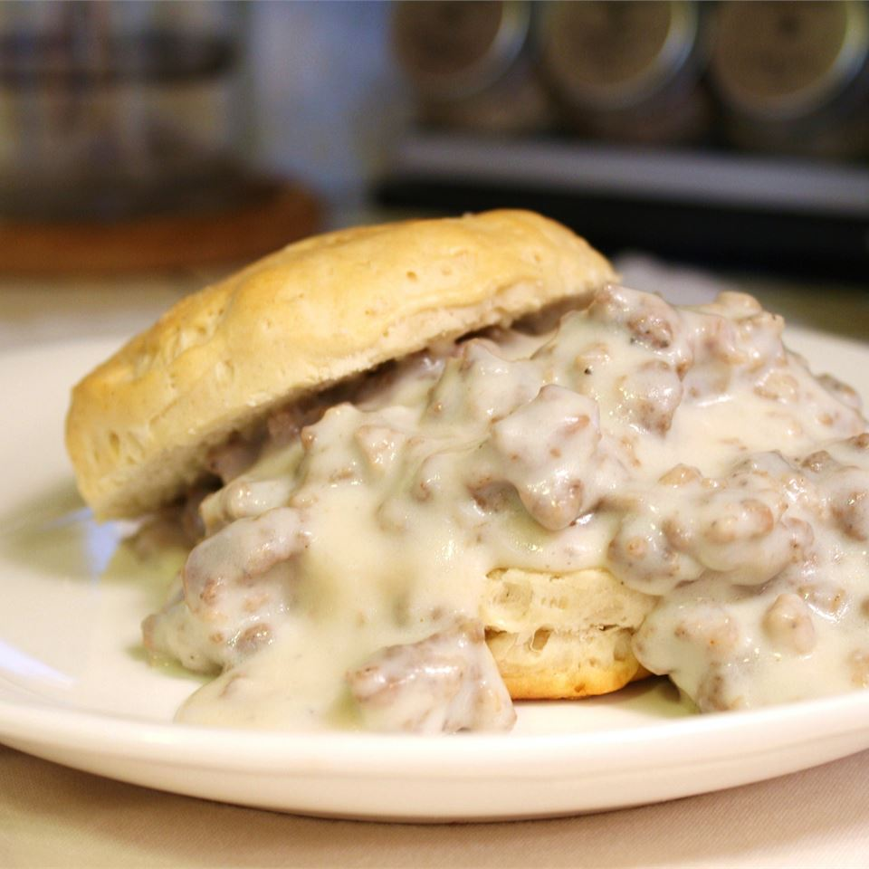

Biscuits and Gravy

Description
Perfect for breakfast, you won't find this shit in New York, but once you try it you'll realize the South really know how to cook some good shit.
Ingredients
- 16 ounce can of biscuits
- 10 ounce package of sausage crumbles
- 1/4 cup flour
- 2 1/2 cups milk
- Salt and ground black pepper to taste (do I really gotta say this?? always season your food tf)
Steps
- Bake biscuits according to package directions
- Meanwhile, cook sausage in large skillet over medium heat 5-6 minutes or until thoroughly heated, stirring frequently. Stir in flour. Gradually add milk; cook until mixture comes to a boil and thickens, stirring constantly. Reduce heat to medium-low; simmer 2 minutes, stirring constantly. Season to taste with salt and pepper.
- Split biscuits in half. Place 2 halves on each of 8 plates; top with about 1/3 cup gravy.